Classer la biodiversité
dans
des groupes
Classer la biodiversité
dans
des groupes
et
la relier à l'évolution
En classe de seconde, on
utilise les acquis du
collège :
- la classification
des espèces dans des
emboîtements et
- l'interprétation
des groupes emboîtés comme reflétant
des liens de parenté que l'on peut représenter par un
arbre qui représente l'évolution
du groupe étudié.
La biodiversité
s'observe de préférence sur le terrain, et peut ensuite
utiliser la classification
établie au collège pour classer les espèces
rencontrées. Un accès direct à la représentation sous forme d'arbre,
sera l'occasion de relier cette
biodiversité à l'évolution.
L'argumentation des relations de parentés sera renforcée
par la construction d'arbres
moléculaires.
On partira donc de groupements emboîtés
déjà enregistrés.
Il sera plus simple de commencer le travail sur un emboîtement
qui ne comporte au départ aucune espèce.
Un exemple est fourni
"Grands_Groupes_..." dans les trois collections destinées
à l'étude de la biodiversité en Seconde :
Arthropodes seconde, Unité du
vivant lycée et Végétaux seconde
- Charger le fichier
donnant la classification : 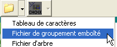 et
choisir le fichier " Grands_Groupes_..."
- La Classification
emboîtée s'affiche
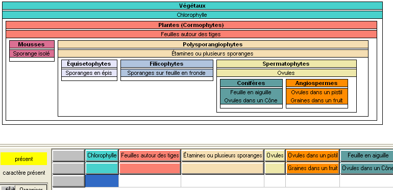
en bas figure le tableau à remplir avec les
espèces rencontrées
- Le bouton 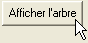 permet de
faire afficher l'arbre correspondant à la classification 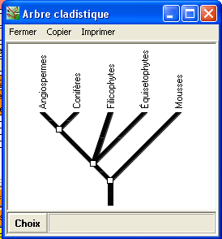
- Entrer une nouvelle espèce :
- Cliquer sur le bouton 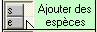
- puis donner le nom de la nouvelle
espèce : 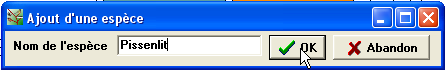
- Remplir le tableau avec les états de
caractères de l'espèce
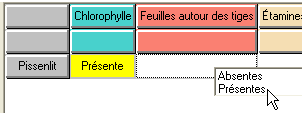
- Lorsque le tableau est rempli (au moins lorsque les lignes sont
complètes), placer les espèces
dans les groupes
représenté par les boîtes
- Faire apparaitre les noms des espèces
en cliquant sur le bouton

puis en cliquant sur le nom de l'espèce dans le tableau 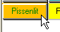 le nom du
tableau apparaît alors sur fond orange pour signaler que
l'espèce est en cours de classement et une étiquette déplaçable
portant le nom de l'espèce apparaît en haut
à droite du diagramme des boîtes.
- Déplacer cette étiquette 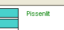 avec la
souris (bouton gauche enfoncé) jusqu'à la bonne
boîte 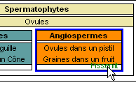 et relâcher
le bouton de la souris.
- Si c'est le bon groupe, le nom s'inscrit sous les autres 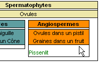
- Pour ajouter une autre espèce, cliquer sur le bouton ...
Retour au menu
{kind=link}